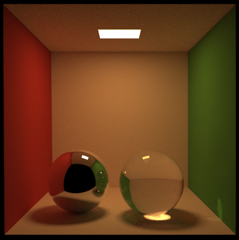
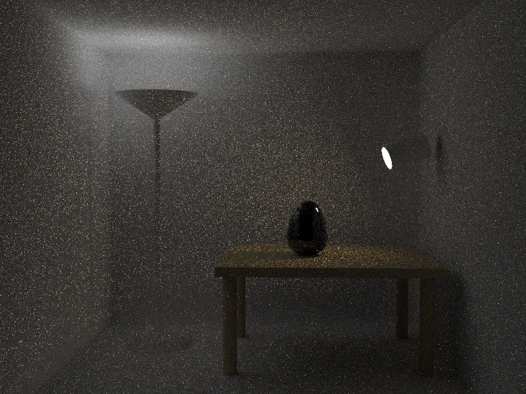
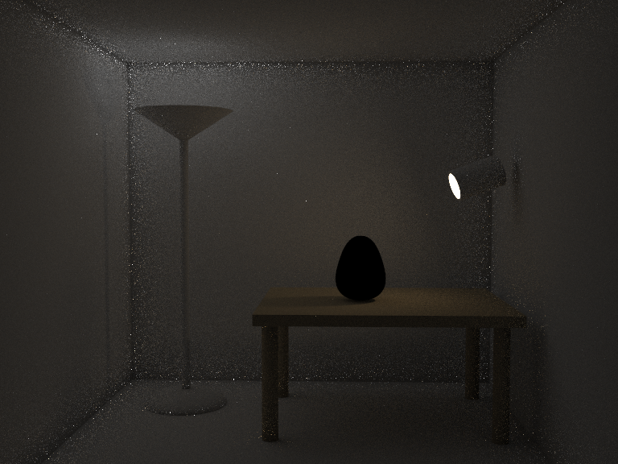

Tracy Renderer
About
Tracy is my physically based renderer, the name comes from trace and y(initial of my family name). Writing a renderder maybe the most exciting and enjoyable experience for graphics students. I started to code a Whitted-style ray tracer following the book Ray Tracing from groud up; then I turned to Path Tracing following the book Physically Based Rendering, and BDPT(Bidirectional Path Tracing) following Eric Veach's thesis. Recently I ported it to GPU under NVIDIA's OptiX framework.
Features
- Basic primitives, .obj meshes(optionally with .mtl material file)
- Textures, Normal Map, Alpha Mask
- Materials: Lambertian, Phong, Blinn, Mirror, Metal, Dielectric
- Light sources: Point Light, Directional Light, Area Light, Environment Map
- Rendering algorithms: Path Tracing, BDPT, PPM, PSSMLT
- Multiple Importance Sampling
- GPU accelerated Path Tracing with NVIDIA OptiX, runs at interactive rates for a moderately complex scene (e.g Crytek Sponza); over 5 times faster than Mitsuba.
- Able to parse Mitsuba's scene files; with my utility tool pbrt2mts which converts PBRT scenes to Mitsuba's, Tracy can also load PBRT scenes files. (the San Miguel scene below is converted from PBRT)
Sample Images
Path Tracing

Cornell box
|

Cornell box with specular materials
|
|
Depth of Field
|
|
BDPT
I proposed a new BDPT algorithm, One-sample BDPT, based on MIS's one sample model. This algorithm preserves the low-variance advantage of MIS technique, and constructs a single BDPT sample faster than the state-of-the-art GPU BDPT algorithm, Streaming BDPT[8], thus is better suited for interactive application. More details are coming in my Master thesis.

|  |
|  |
Progressive Photon Mapping
Following results show PPM's effectiveness in sampling paths that are difficult for Path Tracing. Since the lights are placed behind glass, the scene is dominated by caustics.

PSSMLT
Multiple Importance Sampling
|
Sampling BSDF
|
Sampling Light Sources
|
|
MIS
|
|
Environment Map Illumination
Importance sampling the environment map requires generating more samples in brighter area. The traditional method, namely the inversion method on a 2D discrete distribution, is implemented in both PBRT and Mitsuba.
Besides its sophisticated implementation details, the traditional method can only importance sample the environment map globally. When computing Direct Lighting, the method would possibly sample a pixel on the map that is located in the lower hemisphere of current shading point, which doesn't make contribution at all thus lead to inefficiency.
I developed an importance sampling method based on the Metropolis-Hastings algorithm. The M-H algorithm is a general algorithm for sampling any sophisticated distribution, and in this context, I just use pixel intensity as the function value. The transition rule is composed of two mutation strategies:
- The first is to uniformly sample a pixel in the upper hemisphere of current shading point. This mutation strategy ensures ergodicity, and avoid samples being stuck in a small area.
- The other is to slightly perturb current pixel position. This mutation strategy is good at exploring local region with large pixel intensity.
Timings
Timings for Path Tracing in several scenes.
- Tested on Intel Core i5-4430 (16GB memory), NVIDIA GeForce GTX 760 (4GB memory).
- Tracy was compiled with CUDA 6.5 + OptiX 3.7.0.
- Mitsuba run on 4 cores with SSE2 enabled.
| Scene | Resolution | Max Path Length | SPP | Tracy | Mitsuba | Speed-up |
|---|---|---|---|---|---|---|
| Cornell Box | 512x512 | 6 | 256 | 9.9s | 49.6s | 5.01 |
| Crytek Sponza | 720x480 | 3 | 256 | 22.7s | 140.1s | 6.17 |
| Kitchen | 720x480 | 4 | 256 | 18.2s | 111.2s | 6.11 |
| Conference | 640x480 | 4 | 256 | 14.5s | 90.3s | 6.23 |
Source Code
[github]
Acknowledgments
The Cornell box scene, glass egg scene and MIS scene are from Mitsuba; the kithcen scene is from Peiran Ren; the San Miguel scene was modeled by Guillermo M. Leal Llaguno, and I converted it from PBRT's scene format; the Dragon scene was also converted from PBRT's scene format; the Box scene was modeled by Toshiya Hachisuka.
Reference
- Ray Tracing from the Ground Up, by Kevin Suffern
- Physically Based Rendering, 2nd Edition, by Matt Pharr and Greg Humphreys
- Veach, Eric. Robust Monte Carlo methods for light transport simulation. Diss. Stanford University, 1997.
- Mitsuba Renderer, by Wenzel Jakob
- Hachisuka, Toshiya, Shinji Ogaki, and Henrik Wann Jensen. "Progressive photon mapping." ACM Transactions on Graphics (TOG). Vol. 27. No. 5. ACM, 2008.
- Kelemen, Csaba, et al. "A simple and robust mutation strategy for the metropolis light transport algorithm." Computer Graphics Forum. Vol. 21. No. 3. 2002.
- NVIDIA OptiX
- Van Antwerpen D. Recursive mis computation for streaming bdpt on the gpu[R]. Technical report, Delft University of Technology, 2011.